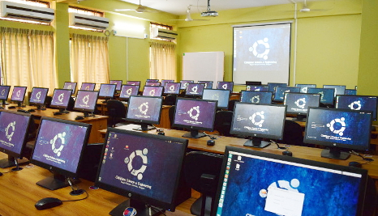
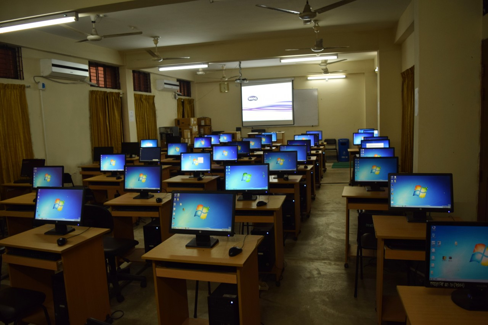
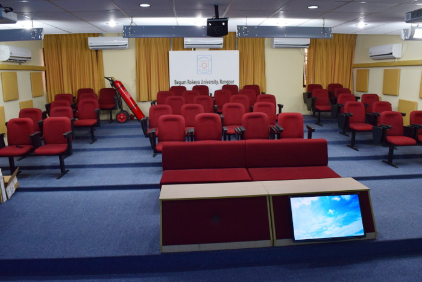
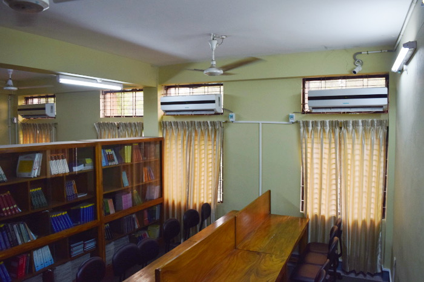

i.Programming Laboratory - CSEPLab
General Information:
This newly established laboratory has 49 high-performance Ubuntu Linux-based workstations with complete multimedia support and Gigabit-Ethernet network. This lab is usually used for programming language classes and exams. It is also configured with epoptes to conduct exams on Moodle. Occasionally, this lab is used to host ACM ICPC style competitive programming contests and workshops. Note: Door access control and cc-cam surveilance system have been deployed in this lab for security reason. Students have to use their ID card to access the lab.
ii.Software Laboratory- CSESLab
General Information:
This laboratory has 45 high-performance Windows-based workstations with complete multimedia support and Gigabit-Ethernet network. This lab is usually used for software development and applications related classes and exams.
iii.Virtual Classroom-VCRoom
General Information:
The virtual classroom facility has been established recently at the CSE department by BdREN. This classroom is equipped with state-of-the-art virtual classroom technologies so that CSE BRUR as well as other entities at BRUR, can create distant learning environment seamlessly.
iv.Seminar Libray
General Information:
The seminar library has been renovated recently with the MoE funds. Although the library is small but rich in facilities.
The Library consists of two sections which are fully air conditioned.
1.Library Section : In the library, books related to Computer Science are arranged in bookshelves and there are some spaces for students to study.
Daily newspapers, weekly magazines are also available for the students.
The library also houses 4th-year projects and thesis reports of all the CSEBRUR graduates.
2.Cyber Library Section : There are 15 high-performance Ubuntu Linux-based PC workstations with e-Library digital contents (i.e ebooks).
Students can also access Internet from the cyber section.
v.Hardware Laboratory- CSEHLab
General Information:
This laboratory has
This laboratory has 27 trainer boards, 15 digital power supplies, 12 digital
multi meters
, 13 oscilloscopes, 11 signal generators, 10 variable registers, 3 IC testers, etc.
vi.Networking and Graphics Laboratory- CSENLab
General Information:
This laboratory has 45 high-performance Windows-based workstations with complete multimedia support and Gigabit-Ethernet network. This lab is usually used for software development and applications related classes and exams.
vii.Moodle and E-resources
General Information:
Moodle is a learning management system (LMS) at CSEBRUR used to deliver course content and host e-learning activities.
Currently, you can not access the Moodle server online but it is accessible from the seminar library PCs and CSEPLab workstations.
# Local Server IP: http://192.168.1.2/moodle
# Login: You must have a user account which is usually provided by a course teacher.
CSEBRUR Judge is a local online judge that can be accessed via http://192.168.1.11/oj.
Students can practice solving ACM ICPC Style problems from the Cyber section of the Seminar Library.
This platform is also intended to be used for programming assignment judging by the faculty members..
Internet can be accessed from the seminar library workstations.
© Copyright reserved by Department of Computer Science and Engineering( BRUR )